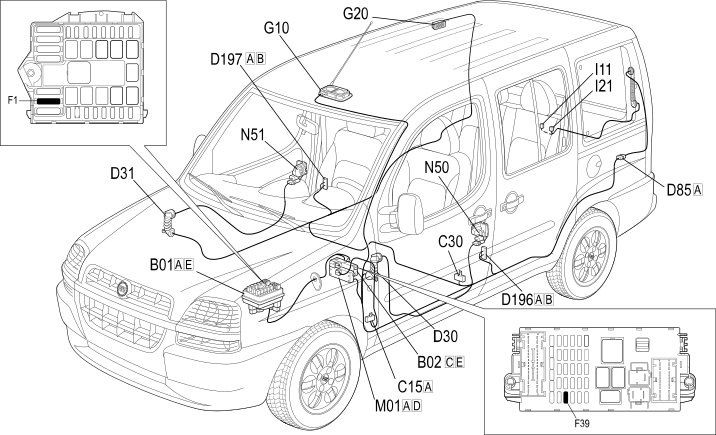

E2510 COURTESY LIGHTS - LOCATION OF COMPONENTS
- Path
- Electrical equipment > 1 ELECTRICAL FUNCTIONS > E25 INTERIOR LIGHTING > E2510 COURTESY LIGHTS > E2510 COURTESY LIGHTS - LOCATION OF COMPONENTS
- Kind
- topic
- Applies to
- engines: 1.2 8v, 1.6 16v, 1.3 JTD 16V, 1.9 JTD 8V, 1.9 DIESEL; production: da 12/03; only with equipment: 7 seater
- Interactive page
- https://sloeber94.github.io/elrnDB-fDbl/en/#/223001666
Applies to: engines: 1.2 8v, 1.6 16v, 1.3 JTD 16V, 1.9 JTD 8V, 1.9 DIESEL; production: da 12/03; only with equipment: 7 seater
Location of components

COMPONENTS
Component code | Name | Assembly reference |
|---|---|---|
Engine compartment junction unit | - | |
Engine compartment junction unit | ||
Engine compartment junction unit | ||
Junction unit under dashboard | ||
Facia earth, driver's side | - | |
Left rear earth | - | |
Right sliding side door coupling | - | |
Right sliding side door coupling | - | |
Rear left door connection | - | |
Rear right door connection | - | |
Tailgate rear seal/ | - | |
Tailgate/ rear coupling | - | |
Front courtesy light | ||
Rear (centre courtesy light) | - | |
Rear (centre courtesy light) | ||
Switch on left front door | ||
Switch on right front door | ||
Switch on rear door | ||
Body computer | - | |
Body computer |
Topics linked from this page (20)
- 1004B POWER UNIT ASSEMBLY
- 5505A multi-function components
- 7005N front door central locking system
- 7020P swinging rear door central locking
- 7040E interior courtesy light system
- B001 JUNCTION UNIT
- B002 JUNCTION UNIT UNDER DASHBOARD
- C015 DASHBOARD EARTH, DRIVER'S SIDE
- C30 LEFT REAR EARTH ( REAR )
- D085 TAILGATE/REAR SEAL
- D196 LEFT SLIDING SIDE DOOR COUPLING
- D197 RIGHT SLIDING SIDE DOOR COUPLING
- D35 REAR/LEFT REAR DOOR COUPLING
- D36 REAR/RIGHT REAR DOOR COUPLING
- G10 FRONT COURTESY LIGHT ( REAR )
- G20 REAR (CENTRE COURTESY LIGHT) ( REAR )
- I016 SWITCH ON LEFT FRONT DOOR.
- I017 SWITCH ON RIGHT FRONT DOOR
- I21 SWITCH ON REAR DOOR ( LEFT TAILGATE )
- M001 BODY COMPUTER